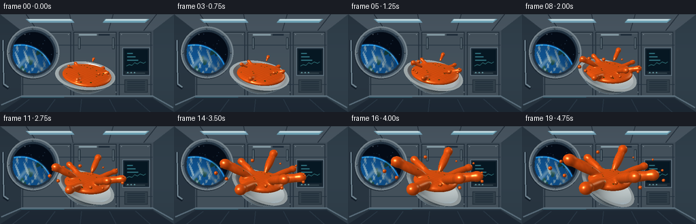
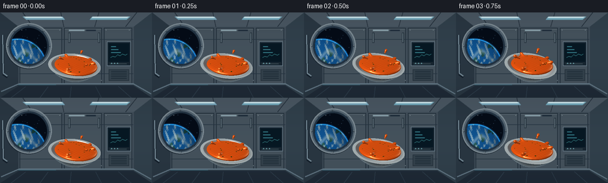

CODING AGENTS AS PIXEL WORLD MODELS
traex/GPT-6.1-Sol · mechanics_0000
点击播放 · 原生 RGB 像素
逐轮保存的候选
回放视频、检查图与代码变化。
每份候选均可单独播放。实际图片检查记录在下方工具轨迹中。
候选 01播放与检查图
点击播放 · 原生 RGB 像素


展开代码变化
--- 上一保存版本
+++ 本次保存版本
@@ -0,0 +1,327 @@
+from pathlib import Path
+import json, math
+import numpy as np
+from PIL import Image, ImageDraw, ImageFilter, ImageFont
+import artifact_io
+
+ROOT = Path(__file__).resolve().parent
+SPEC = json.loads((ROOT/'task_spec.json').read_text())
+W,H = SPEC['width'],SPEC['height']
+S=2
+SW,SH=W*S,H*S
+rng=np.random.default_rng(24)
+
+def norm(v):
+ return v / np.maximum(np.linalg.norm(v,axis=-1,keepdims=True),1e-9)
+
+def station():
+ y,x=np.mgrid[0:SH,0:SW]/S
+ grad=np.clip(1-y/180,0,1)
+ b=np.empty((SH,SW,3),np.float32)
+ for c,(a,d) in enumerate([(29,30),(40,36),(52,40)]): b[:,:,c]=a+d*grad
+ im=Image.fromarray(np.uint8(b)); d=ImageDraw.Draw(im)
+ def poly(p,c):d.polygon([(int(a*S),int(b*S)) for a,b in p],fill=c)
+ def line(p,c,width=1):d.line([(int(a*S),int(b*S)) for a,b in p],fill=c,width=max(1,int(width*S)))
+ def box(p,c,outline=None,width=1):d.rectangle(tuple(int(a*S) for a in p),fill=c,outline=outline,width=max(1,int(width*S)))
+ def ellipse(p,c,outline=None,width=1):d.ellipse(tuple(int(a*S) for a in p),fill=c,outline=outline,width=max(1,int(width*S)))
+ # The station's paneled end wall and tapering ceiling.
+ poly([(0,0),(256,0),(225,24),(31,24)],(77,91,103))
+ poly([(0,0),(31,24),(31,123),(0,144)],(43,57,69))
+ poly([(256,0),(225,24),(225,123),(256,144)],(51,67,79))
+ box((31,24,225,122),(68,82,94))
+ for x0,x1 in [(33,104),(108,171),(175,222)]:
+ box((x0,26,x1,120),(72,86,97), (27,41,53),1)
+ line([(x0+1,28),(x1-1,28)],(111,125,134),.7)
+ for yy in [45,103]:line([(32,yy),(224,yy)],(38,54,68),1)
+ for xx in [55,107,159,211]:
+ line([(128+(xx-128)*1.23,0),(xx,24)],(32,45,57),1)
+ poly([(38,7),(105,7),(109,12),(44,12)],(124,174,196))
+ poly([(40,7),(103,7),(106,9),(43,9)],(219,244,249))
+ poly([(155,7),(219,7),(213,12),(151,12)],(119,177,198))
+ poly([(156,7),(217,7),(214,9),(154,9)],(218,244,250))
+ line([(2,133),(32,120),(224,120),(254,137)],(103,125,140),2)
+ poly([(0,144),(32,124),(224,124),(256,144)],(32,44,57))
+ for xx in [18,67,118,171,221]:line([(xx,144),(128+(xx-128)*.77,125)],(48,65,80),1)
+ # Thick pressure-window frame, layered metal bevels.
+ ellipse((9,18,87,95),(23,35,46))
+ ellipse((10,18,87,94),(132,147,156))
+ ellipse((12,20,85,92),(86,103,116))
+ ellipse((15,23,82,90),(36,53,69))
+ ellipse((18,26,79,87),(10,21,35))
+ # Render an orbital Earth through the window, with spherical atmosphere and clouds.
+ yy,xx=np.mgrid[0:SH,0:SW]/S
+ window=((xx-48.5)/30.5)**2+((yy-56.5)/30.5)**2<1
+ earth_r=np.sqrt((xx-30)**2+(yy-92)**2)
+ earth=earth_r<48
+ sky=np.zeros((SH,SW,3),float);sky[:]=[4,12,24]
+ star_rng=np.random.default_rng(143)
+ for px,py,rad in zip(star_rng.uniform(19,78,24),star_rng.uniform(27,70,24),star_rng.uniform(.1,.35,24)):
+ st=np.exp(-((xx-px)**2+(yy-py)**2)/(2*rad*rad))
+ sky+=st[:,:,None]*np.array([100,135,162])
+ u=(xx-30)/48;v=(yy-92)/48; zz=np.sqrt(np.clip(1-u*u-v*v,0,1))
+ ocean=np.zeros_like(sky)
+ l=np.clip(.3+.6*zz-.2*u-.25*v,.08,1)
+ ocean[:,:,0]=9+7*l;ocean[:,:,1]=47+43*l;ocean[:,:,2]=87+69*l
+ terrain=np.sin(7*u+4*v+2*zz)+.6*np.sin(16*u-13*v+4*zz)+.3*np.sin(32*u+21*v)
+ land=(terrain>1.15)&earth
+ ocean[land]=np.array([33,91,89])*l[land,None]
+ cloudwave=(np.sin(23*u+14*v+4*np.sin(5*v))+.5*np.sin(43*u-21*v)+.26*np.sin(92*u+62*v))
+ cloud=np.clip((cloudwave-.38)*1.4,0,1)*.73
+ bands=np.exp(-((v+.37+.2*np.sin(u*6))/.09)**2)*.5
+ cloud=np.clip(cloud+bands,0,.92)
+ ocean=ocean*(1-cloud[:,:,None])+np.array([187,216,225])*cloud[:,:,None]*l[:,:,None]
+ rim=np.exp(-((earth_r-47)/.8)**2)
+ ocean+=rim[:,:,None]*np.array([23,99,143])
+ sky[earth]=ocean[earth]
+ atmos=np.exp(-((earth_r-48.2)/1.0)**2)
+ sky+=atmos[:,:,None]*np.array([10,38,66])
+ arr=np.array(im).astype(float);arr[window]=sky[window]
+ im=Image.fromarray(np.uint8(np.clip(arr,0,255)));d=ImageDraw.Draw(im)
+ for a in np.arange(0,2*np.pi,np.pi/4):
+ px=48.5+35.3*np.cos(a);py=56.5+35.3*np.sin(a)
+ ellipse((px-1,py-1,px+1,py+1),(31,45,56))
+ ellipse((px-.4,py-.6,px+.2,py+.2),(169,182,187))
+ # Surface seams, fixtures, vents and an unobtrusive station display.
+ box((180,49,220,90),(23,38,50), (112,132,146),1)
+ box((183,52,217,83),(6,25,36))
+ for j in range(3):
+ box((187,57+j*5,195+j*4,58+j*5),(56,133,147))
+ line([(186,76),(190,74),(194,75),(198,71),(202,73),(206,70),(211,72),(214,70)],(94,215,218),.7)
+ box((185,86,213,87),(58,76,85))
+ for xx in [187,192,197]:ellipse((xx,85,xx+1.5,86.5),(120,185,191))
+ box((183,96,217,115),(54,69,80),(36,49,60),1)
+ for yy0 in range(99,113,3):line([(187,yy0),(213,yy0)],(24,40,52),1)
+ for xx in [115,165]:
+ box((xx,34,xx+3,51),(33,48,59))
+ line([(xx+1,35),(xx+1,50)],(137,155,164),1)
+ box((116,29,142,31),(145,169,179))
+ box((145,29,161,31),(33,48,63))
+ for xx,yy0 in [(36,29),(100,29),(113,114),(170,114),(178,29),(217,29)]:
+ ellipse((xx,yy0,xx+1,yy0+1),(158,173,180))
+ # A rail at the edge of the module; a subdued floor light.
+ line([(4,38),(5,104),(12,109)],(19,31,43),4)
+ line([(4,38),(5,102),(12,107)],(124,146,159),2)
+ line([(31,122),(94,122)],(73,159,181),.8)
+ im=im.filter(ImageFilter.GaussianBlur(.32*S))
+ a=np.asarray(im,dtype=float)/255
+ vign=np.clip(1-.20*((xx-128)/160)**2-.11*((yy-70)/100)**2,.6,1)
+ return a*vign[:,:,None]
+
+BG=station()
+# A pinhole camera, fixed to keep the zero-gravity motion legible.
+C=np.array([0.,3.1,6.7])
+target=np.array([0.,.36,0.])
+F=norm(target-C);RIGHT=norm(np.cross(F,np.array([0.,1.,0.])));UP=np.cross(RIGHT,F)
+yy,xx=np.mgrid[0:SH,0:SW]
+focal=SW/(2*np.tan(np.deg2rad(48)/2))
+D=norm(F+(xx[:,:,None]+.5-SW/2)/focal*RIGHT-(yy[:,:,None]+.5-SH/2)/focal*UP).reshape(-1,3)
+LIGHT=norm(np.array([-3.,5.,4.]))
+FILL=norm(np.array([3.,1.,-3.]))
+
+def rotation(t):
+ a=-.09-.43*t; b=.04+.07*t
+ rz=np.array([[np.cos(a),-np.sin(a),0],[np.sin(a),np.cos(a),0],[0,0,1]])
+ rx=np.array([[1,0,0],[0,np.cos(b),-np.sin(b)],[0,np.sin(b),np.cos(b)]])
+ return rz@rx
+
+def bowl_hits(t):
+ R=rotation(t);center=np.array([-.06+.06*t,-.075+.04*t,0.])
+ o=(C-center)@R;v=D@R
+ count=len(D); dist=np.full(count,1e6);ns=np.zeros((count,3));inside=np.zeros(count,bool)
+ # Analytic intersections with two nested paraboloids.
+ for a,b,isinner in [(.56,-.72,False),(.60,-.60,True)]:
+ aa=a*(v[:,0]**2+v[:,2]**2)
+ bb=2*a*(o[0]*v[:,0]+o[2]*v[:,2])-v[:,1]
+ cc=a*(o[0]**2+o[2]**2)+b-o[1]
+ disc=bb*bb-4*aa*cc
+ sd=np.sqrt(np.maximum(disc,0))
+ for root in [(-bb-sd)/(2*aa),(-bb+sd)/(2*aa)]:
+ p=o+root[:,None]*v
+ good=(disc>=0)&(root>0)&(p[:,1]<=0)&(p[:,1]>=b)&(root<dist)
+ n=norm(np.stack([2*a*p[:,0],-np.ones(count),2*a*p[:,2]],-1))
+ if isinner:n=-n
+ dist[good]=root[good];ns[good]=n[good]@R.T;inside[good]=isinner
+ tr=-o[1]/v[:,1];pr=o+tr[:,None]*v;rr=pr[:,0]**2+pr[:,2]**2
+ good=(tr>0)&(rr>=1.0)&(rr<=.72/.56)&(tr<dist)
+ dist[good]=tr[good];ns[good]=np.array([0.,1.,0.])@R.T;inside[good]=False
+ return dist,ns,inside,R,center
+
+# A small distance volume represents a cohesive fluid surface. Smooth unions,
+# not downward ballistic motion, make the soup's spreading feel weightless.
+NX,NY,NZ=104,80,104
+LO=np.array([-2.2,-.48,-2.2]);HI=np.array([2.2,1.8,2.2])
+STEP=(HI-LO)/np.array([NX-1,NY-1,NZ-1])
+gx=np.linspace(LO[0],HI[0],NX,dtype=np.float32)
+gy=np.linspace(LO[1],HI[1],NY,dtype=np.float32)
+gz=np.linspace(LO[2],HI[2],NZ,dtype=np.float32)
+X,Y,Z=np.meshgrid(gx,gy,gz,indexing='ij')
+GRID=np.stack((X,Y,Z),axis=-1)
+
+def ellipsoid_sdf(p,center,radii):
+ q=(p-center)/radii
+ k0=np.linalg.norm(q,axis=-1)
+ k1=np.linalg.norm(q/radii,axis=-1)
+ return k0*(k0-1)/np.maximum(k1,1e-5)
+
+def smin(a,b,k=.13):
+ h=np.maximum(k-np.abs(a-b),0)/k
+ return np.minimum(a,b)-h*h*k*.25
+
+ARMS=[(.08,.24,.19,1.59),(1.00,.48,.17,1.47),(2.03,.17,.18,1.69),(2.97,.47,.19,1.64),(4.02,.25,.15,1.55),(5.07,.65,.17,1.59),(5.70,.20,.14,1.70)]
+
+def liquid_grid(t):
+ # Fluid lags the vessel rotation as it leaves the rim.
+ angle=-.09*(1-t)-.10*t
+ R=np.array([[np.cos(angle),-np.sin(angle),0],[np.sin(angle),np.cos(angle),0],[0,0,1]])
+ center=np.array([.025*t,-.105+.30*t,0.])
+ local=(GRID-center)@R
+ rad=np.array([.925-.12*t,.165+.095*t,.925-.12*t])
+ field=ellipsoid_sdf(local,np.zeros(3),rad)
+ spread=t*t*(3-2*t)
+ for ang,up,r,end in ARMS:
+ direction=norm(np.array([np.cos(ang),up,np.sin(ang)]))
+ start=direction*(.63-.05*t)
+ stop=direction*(.78+(end-.78)*spread)
+ midpoint=(start+stop)/2
+ axis=norm(stop-start)
+ h=np.linalg.norm(stop-start)*.5
+ q=local-midpoint
+ axial=np.sum(q*axis,axis=-1)
+ radial=np.sqrt(np.maximum(np.sum(q*q,axis=-1)-axial*axial,0))
+ rw=(.03+(r-.03)*spread)
+ # Prolate ellipsoid, with a plumper bead at its outward end.
+ k0=np.sqrt((radial/rw)**2+(axial/(h+rw))**2)
+ k1=np.sqrt((radial/rw**2)**2+(axial/(h+rw)**2)**2)
+ arm=k0*(k0-1)/np.maximum(k1,1e-6)
+ field=smin(field,arm,.12)
+ bulb=ellipsoid_sdf(local,stop,np.array([rw*1.13,rw*1.06,rw*1.13]))
+ field=smin(field,bulb,.10)
+ return field.astype(np.float32),center,rad,R
+
+def sample(field,p):
+ g=(p-LO)/STEP
+ valid=np.all((g>=0)&(g<np.array([NX-1,NY-1,NZ-1])),axis=-1)
+ g=np.clip(g,0,np.array([NX-1.00001,NY-1.00001,NZ-1.00001]))
+ ij=np.floor(g).astype(np.int32);w=g-ij
+ i,j,k=ij.T;wx,wy,wz=w.T
+ f000=field[i,j,k];f100=field[i+1,j,k];f010=field[i,j+1,k];f110=field[i+1,j+1,k]
+ f001=field[i,j,k+1];f101=field[i+1,j,k+1];f011=field[i,j+1,k+1];f111=field[i+1,j+1,k+1]
+ a=(f000*(1-wx)+f100*wx)*(1-wy)+(f010*(1-wx)+f110*wx)*wy
+ b=(f001*(1-wx)+f101*wx)*(1-wy)+(f011*(1-wx)+f111*wx)*wy
+ return np.where(valid,a*(1-wz)+b*wz,1.0)
+
+def fluid_hits(field,bowl_depth):
+ inv=1/D
+ a=(LO-C)*inv;b=(HI-C)*inv
+ tmin=np.maximum(np.max(np.minimum(a,b),axis=1),0)
+ tmax=np.minimum(np.min(np.maximum(a,b),axis=1),bowl_depth)
+ active=np.flatnonzero(tmin<tmax)
+ depth=np.full(len(D),1e6)
+ tt=tmin.copy()+.001
+ for step in range(110):
+ if not len(active):break
+ p=C+tt[active,None]*D[active]
+ sd=sample(field,p)
+ hit=sd<.003
+ depth[active[hit]]=tt[active[hit]]
+ tt[active]+=np.maximum(sd*.78,.0015)
+ active=active[(~hit)&(tt[active]<tmax[active])]
+ ids=np.flatnonzero(depth<1e5)
+ p=C+depth[ids,None]*D[ids]
+ normals=np.empty_like(p)
+ eps=.014
+ for j in range(3):
+ shift=np.zeros(3);shift[j]=eps
+ normals[:,j]=sample(field,p+shift)-sample(field,p-shift)
+ return depth,ids,p,norm(normals)
+
+herbs_rng=np.random.default_rng(72)
+herbs=[]
+for j in range(18):
+ a=herbs_rng.uniform(0,2*np.pi);r=np.sqrt(herbs_rng.uniform(.06,.83))
+ herbs.append((r*np.cos(a),r*np.sin(a),herbs_rng.uniform(.019,.039),herbs_rng.uniform(.015,.027)))
+
+def soup_shader(p,n,v,t,center,rad,R):
+ lam=np.maximum(n@LIGHT,0);fill=np.maximum(n@FILL,0);ndv=np.clip(np.sum(n*v,axis=-1),0,1)
+ q=(p-center)@R
+ noise=.018*np.sin(38*q[:,0]+10*q[:,1])*np.sin(41*q[:,2]-6*q[:,1])
+ base=np.tile(np.array([.92,.325,.058]),(len(p),1))
+ base+=noise[:,None]*np.array([1,.7,.2])
+ for hx,hz,rx,rz in herbs:
+ h=((q[:,0]/rad[0]-hx)/rx)**2+((q[:,2]/rad[2]-hz)/rz)**2
+ mask=np.clip((1.15-h)*3,0,1)*(q[:,1]>0.015)*np.clip(n[:,1]*2,0,1)
+ base=base*(1-mask[:,None])+(np.array([.13,.235,.035])[None,:]) *mask[:,None]
+ diff=.43+.56*lam+.16*fill
+ rgb=base*diff[:,None]
+ half=norm(v+LIGHT)
+ nh=np.clip(np.sum(n*half,axis=-1),0,1)
+ spec=nh**65*.88+nh**12*.075
+ fres=(1-ndv)**3
+ rgb+=spec[:,None]*np.array([1.,.86,.64])
+ rgb+=fres[:,None]*np.array([.12,.08,.026])
+ # Cool station reflections on the wet liquid.
+ hh=norm(v+FILL);reflect=np.clip(np.sum(n*hh,axis=-1),0,1)**45
+ rgb+=reflect[:,None]*np.array([.17,.26,.28])
+ return np.clip(rgb,0,1)
+
+def render(t):
+ image=BG.reshape(-1,3).copy()
+ bd,bn,inner,R,bc=bowl_hits(t)
+ field,lc,lr,lR=liquid_grid(t)
+ fd,fi,fp,fn=fluid_hits(field,bd)
+ # Smooth glazed ceramic, with warm occlusion under the soup and a blue rim.
+ bi=np.flatnonzero(bd<1e5);p=C+bd[bi,None]*D[bi];n=bn[bi];v=-D[bi]
+ lam=np.maximum(n@LIGHT,0);fill=np.maximum(n@FILL,0)
+ ndv=np.clip(np.sum(n*v,axis=-1),0,1)
+ diffuse=.32+.62*lam+.13*fill
+ base=np.tile(np.array([.80,.84,.845]),(len(bi),1))
+ local=(p-bc)@R
+ # Thin navy ceramic stripe beneath the lip.
+ stripe=(local[:,1]>-.095)&(local[:,1]<-.068)&(~inner[bi])
+ base[stripe]=[.10,.22,.28]
+ proximity=sample(field,p+n*.065)
+ ao=.77+.23*np.clip(proximity/.13,0,1)
+ rgb=base*diffuse[:,None]*ao[:,None]
+ half=norm(v+LIGHT)
+ spec=np.clip(np.sum(n*half,axis=-1),0,1)**55*.65
+ rgb+=spec[:,None]*np.array([.95,.98,1.])
+ fres=(1-ndv)**4
+ rgb+=fres[:,None]*np.array([.17,.24,.29])
+ warmth=np.exp(-np.maximum(proximity,0)*8)*inner[bi]
+ rgb+=warmth[:,None]*np.array([.07,.013,0])
+ image[bi]=np.clip(rgb,0,1)
+ image[fi]=soup_shader(fp,fn,-D[fi],t,lc,lr,lR)
+ depth=np.minimum(bd,fd)
+ # Detached beads drift in every screen direction, retaining spherical surface tension.
+ for j in range(13):
+ a=j*2.399+.20
+ release=.10+(j%4)*.075
+ u=np.clip((t-release)/(1-release),0,1)
+ if u<=0:continue
+ rr=.67+u*(1.20+.20*np.sin(j*5))
+ pos=np.array([np.cos(a)*rr,.10+u*(.33+.52*(.5+.5*np.sin(j*3.1))),np.sin(a)*rr])
+ pos+=np.array([.015*np.sin(t*2+j),0,0])
+ radius=(.043+.033*((j*7)%5)/4)*min(1,u*7)
+ oc=C-pos;b=D@oc;c=oc@oc-radius*radius;disc=b*b-c
+ dd=-b-np.sqrt(np.maximum(disc,0))
+ good=(disc>0)&(dd>0)&(dd<depth)
+ ids=np.flatnonzero(good)
+ if len(ids):
+ pp=C+dd[ids,None]*D[ids];nn=norm(pp-pos)
+ image[ids]=soup_shader(pp,nn,-D[ids],t,lc,lr,lR)
+ depth[ids]=dd[ids]
+ image=image.reshape(SH,SW,3)
+ # Very mild camera response and antialiasing; no per-frame random flicker.
+ image=np.clip(image,0,1)
+ im=Image.fromarray(np.uint8(image*255+.5))
+ return np.asarray(im.resize((W,H),Image.Resampling.LANCZOS),dtype=np.uint8)
+
+def main():
+ frames=[]
+ for i in range(SPEC['frames']):
+ print(f'Rendering {i+1}/{SPEC["frames"]}',flush=True)
+ frames.append(render(i/(SPEC['frames']-1)))
+ artifact_io.save(np.stack(frames),ROOT)
+ print('Saved RGB frames, pixels.npz, and index.html.',flush=True)
+
+if __name__=='__main__':main()
可观测工具轨迹
实际执行的命令与返回图片。
命令 1exit 0
/bin/bash -lc 'ls -la && cat prompt.txt && cat GENERATION_RULES.md && cat task_spec.json'
命令 2exit 0
/bin/bash -lc "cat artifact_io.py && cat player_template.html && python - <<'PY'
import PIL, numpy
print('PIL',PIL.__version__)
PY"命令 3exit 0
/bin/bash -lc "cat > generate.py <<'PY'
from pathlib import Path
import json, math
import numpy as np
from PIL import Image, ImageDraw, ImageFilter, ImageFont
import artifact_io
ROOT = Path(__file__).resolve().parent
SPEC = json.loads((ROOT/'task_spec.json').read_text())
W,H = SPEC['width'],SPEC['height']
S=2
SW,SH=W*S,H*S
rng=np.random.default_rng(24)
def norm(v):
return v / np.maximum(np.linalg.norm(v,axis=-1,keepdims=True),1e-9)
def station():
y,x=np.mgrid[0:SH,0:SW]/S
grad=np.clip(1-y/180,0,1)
b=np.empty((SH,SW,3),np.float32)
for c,(a,d) in enumerate([(29,30),(40,36),(52,40)]): b[:,:,c]=a+d*grad
im=Image.fromarray(np.uint8(b)); d=ImageDraw.Draw(im)
def poly(p,c):d.polygon([(int(a*S),int(b*S)) for a,b in p],fill=c)
def line(p,c,width=1):d.line([(int(a*S),int(b*S)) for a,b in p],fill=c,width=max(1,int(width*S)))
def box(p,c,outline=None,width=1):d.rectangle(tuple(int(a*S) for a in p),fill=c,outline=outline,width=max(1,int(width*S)))
def ellipse(p,c,outline=None,width=1):d.ellipse(tuple(int(a*S) for a in p),fill=c,outline=outline,width=max(1,int(width*S)))
# The station's paneled end wall and tapering ceiling.
poly([(0,0),(256,0),(225,24),(31,24)],(77,91,103))
poly([(0,0),(31,24),(31,123),(0,144)],(43,57,69))
poly([(256,0),(225,24),(225,123),(256,144)],(51,67,79))
box((31,24,225,122),(68,82,94))
for x0,x1 in [(33,104),(108,171),(175,222)]:
box((x0,26,x1,120),(72,86,97), (27,41,53),1)
line([(x0+1,28),(x1-1,28)],(111,125,134),.7)
for yy in [45,103]:line([(32,yy),(224,yy)],(38,54,68),1)
for xx in [55,107,159,211]:
line([(128+(xx-128)*1.23,0),(xx,24)],(32,45,57),1)
poly([(38,7),(105,7),(109,12),(44,12)],(124,174,196))
poly([(40,7),(103,7),(106,9),(43,9)],(219,244,249))
poly([(155,7),(219,7),(213,12),(151,12)],(119,177,198))
poly([(156,7),(217,7),(214,9),(154,9)],(218,244,250))
line([(2,133),(32,120),(224,120),(254,137)],(103,125,140),2)
poly([(0,144),(32,124),(224,124),(256,144)],(32,44,57))
for xx in [18,67,118,171,221]:line([(xx,144),(128+(xx-128)*.77,125)],(48,65,80),1)
# Thick pressure-window frame, layered metal bevels.
ellipse((9,18,87,95),(23,35,46))
ellipse((10,18,87,94),(132,147,156))
ellipse((12,20,85,92),(86,103,116))
ellipse((15,23,82,90),(36,53,69))
ellipse((18,26,79,87),(10,21,35))
# Render an orbital Earth through the window, with spherical atmosphere and clouds.
yy,xx=np.mgrid[0:SH,0:SW]/S
window=((xx-48.5)/30.5)**2+((yy-56.5)/30.5)**2<1
earth_r=np.sqrt((xx-30)**2+(yy-92)**2)
earth=earth_r<48
sky=np.zeros((SH,SW,3),float);sky[:]=[4,12,24]
star_rng=np.random.default_rng(143)
for px,py,rad in zip(star_rng.uniform(19,78,24),star_rng.uniform(27,70,24),star_rng.uniform(.1,.35,24)):
st=np.exp(-((xx-px)**2+(yy-py)**2)/(2*rad*rad))
sky+=st[:,:,None]*np.array([100,135,162])
u=(xx-30)/48;v=(yy-92)/48; zz=np.sqrt(np.clip(1-u*u-v*v,0,1))
ocean=np.zeros_like(sky)
l=np.clip(.3+.6*zz-.2*u-.25*v,.08,1)
ocean[:,:,0]=9+7*l;ocean[:,:,1]=47+43*l;ocean[:,:,2]=87+69*l
terrain=np.sin(7*u+4*v+2*zz)+.6*np.sin(16*u-13*v+4*zz)+.3*np.sin(32*u+21*v)
land=(terrain>1.15)&earth
ocean[land]=np.array([33,91,89])*l[land,None]
cloudwave=(np.sin(23*u+14*v+4*np.sin(5*v))+.5*np.sin(43*u-21*v)+.26*np.sin(92*u+62*v))
cloud=np.clip((cloudwave-.38)*1.4,0,1)*.73
bands=np.exp(-((v+.37+.2*np.sin(u*6))/.09)**2)*.5
cloud=np.clip(cloud+bands,0,.92)
ocean=ocean*(1-cloud[:,:,None])+np.array([187,216,225])*cloud[:,:,None]*l[:,:,None]
rim=np.exp(-((earth_r-47)/.8)**2)
ocean+=rim[:,:,None]*np.array([23,99,143])
sky[earth]=ocean[earth]
atmos=np.exp(-((earth_r-48.2)/1.0)**2)
sky+=atmos[:,:,None]*np.array([10,38,66])
arr=np.array(im).astype(float);arr[window]=sky[window]
im=Image.fromarray(np.uint8(np.clip(arr,0,255)));d=ImageDraw.Draw(im)
for a in np.arange(0,2*np.pi,np.pi/4):
px=48.5+35.3*np.cos(a);py=56.5+35.3*np.sin(a)
ellipse((px-1,py-1,px+1,py+1),(31,45,56))
ellipse((px-.4,py-.6,px+.2,py+.2),(169,182,187))
# Surface seams, fixtures, vents and an unobtrusive station display.
box((180,49,220,90),(23,38,50), (112,132,146),1)
box((183,52,217,83),(6,25,36))
for j in range(3):
box((187,57+j*5,195+j*4,58+j*5),(56,133,147))
line([(186,76),(190,74),(194,75),(198,71),(202,73),(206,70),(211,72),(214,70)],(94,215,218),.7)
box((185,86,213,87),(58,76,85))
for xx in [187,192,197]:ellipse((xx,85,xx+1.5,86.5),(120,185,191))
box((183,96,217,115),(54,69,80),(36,49,60),1)
for yy0 in range(99,113,3):line([(187,yy0),(213,yy0)],(24,40,52),1)
for xx in [115,165]:
box((xx,34,xx+3,51),(33,48,59))
line([(xx+1,35),(xx+1,50)],(137,155,164),1)
box((116,29,142,31),(145,169,179))
box((145,29,161,31),(33,48,63))
for xx,yy0 in [(36,29),(100,29),(113,114),(170,114),(178,29),(217,29)]:
ellipse((xx,yy0,xx+1,yy0+1),(158,173,180))
# A rail at the edge of the module; a subdued floor light.
line([(4,38),(5,104),(12,109)],(19,31,43),4)
line([(4,38),(5,102),(12,107)],(124,146,159),2)
line([(31,122),(94,122)],(73,159,181),.8)
im=im.filter(ImageFilter.GaussianBlur(.32*S))
a=np.asarray(im,dtype=float)/255
vign=np.clip(1-.20*((xx-128)/160)**2-.11*((yy-70)/100)**2,.6,1)
return a*vign[:,:,None]
BG=station()
# A pinhole camera, fixed to keep the zero-gravity motion legible.
C=np.array([0.,3.1,6.7])
target=np.array([0.,.36,0.])
F=norm(target-C);RIGHT=norm(np.cross(F,np.array([0.,1.,0.])));UP=np.cross(RIGHT,F)
yy,xx=np.mgrid[0:SH,0:SW]
focal=SW/(2*np.tan(np.deg2rad(48)/2))
D=norm(F+(xx[:,:,None]+.5-SW/2)/focal*RIGHT-(yy[:,:,None]+.5-SH/2)/focal*UP).reshape(-1,3)
LIGHT=norm(np.array([-3.,5.,4.]))
FILL=norm(np.array([3.,1.,-3.]))
def rotation(t):
a=-.09-.43*t; b=.04+.07*t
rz=np.array([[np.cos(a),-np.sin(a),0],[np.sin(a),np.cos(a),0],[0,0,1]])
rx=np.array([[1,0,0],[0,np.cos(b),-np.sin(b)],[0,np.sin(b),np.cos(b)]])
return rz@rx
def bowl_hits(t):
R=rotation(t);center=np.array([-.06+.06*t,-.075+.04*t,0.])
o=(C-center)@R;v=D@R
count=len(D); dist=np.full(count,1e6);ns=np.zeros((count,3));inside=np.zeros(count,bool)
# Analytic intersections with two nested paraboloids.
for a,b,isinner in [(.56,-.72,False),(.60,-.60,True)]:
aa=a*(v[:,0]**2+v[:,2]**2)
bb=2*a*(o[0]*v[:,0]+o[2]*v[:,2])-v[:,1]
cc=a*(o[0]**2+o[2]**2)+b-o[1]
disc=bb*bb-4*aa*cc
sd=np.sqrt(np.maximum(disc,0))
for root in [(-bb-sd)/(2*aa),(-bb+sd)/(2*aa)]:
p=o+root[:,None]*v
good=(disc>=0)&(root>0)&(p[:,1]<=0)&(p[:,1]>=b)&(root<dist)
n=norm(np.stack([2*a*p[:,0],-np.ones(count),2*a*p[:,2]],-1))
if isinner:n=-n
dist[good]=root[good];ns[good]=n[good]@R.T;inside[good]=isinner
tr=-o[1]/v[:,1];pr=o+tr[:,None]*v;rr=pr[:,0]**2+pr[:,2]**2
good=(tr>0)&(rr>=1.0)&(rr<=.72/.56)&(tr<dist)
dist[good]=tr[good];ns[good]=np.array([0.,1.,0.])@R.T;inside[good]=False
return dist,ns,inside,R,center
# A small distance volume represents a cohesive fluid surface. Smooth unions,
# not downward ballistic motion, make the soup's spreading feel weightless.
NX,NY,NZ=104,80,104
LO=np.array([-2.2,-.48,-2.2]);HI=np.array([2.2,1.8,2.2])
STEP=(HI-LO)/np.array([NX-1,NY-1,NZ-1])
gx=np.linspace(LO[0],HI[0],NX,dtype=np.float32)
gy=np.linspace(LO[1],HI[1],NY,dtype=np.float32)
gz=np.linspace(LO[2],HI[2],NZ,dtype=np.float32)
X,Y,Z=np.meshgrid(gx,gy,gz,indexing='ij')
GRID=np.stack((X,Y,Z),axis=-1)
def ellipsoid_sdf(p,center,radii):
q=(p-center)/radii
k0=np.linalg.norm(q,axis=-1)
k1=np.linalg.norm(q/radii,axis=-1)
return k0*(k0-1)/np.maximum(k1,1e-5)
def smin(a,b,k=.13):
h=np.maximum(k-np.abs(a-b),0)/k
return np.minimum(a,b)-h*h*k*.25
ARMS=[(.08,.24,.19,1.59),(1.00,.48,.17,1.47),(2.03,.17,.18,1.69),(2.97,.47,.19,1.64),(4.02,.25,.15,1.55),(5.07,.65,.17,1.59),(5.70,.20,.14,1.70)]
def liquid_grid(t):
# Fluid lags the vessel rotation as it leaves the rim.
angle=-.09*(1-t)-.10*t
R=np.array([[np.cos(angle),-np.sin(angle),0],[np.sin(angle),np.cos(angle),0],[0,0,1]])
center=np.array([.025*t,-.105+.30*t,0.])
local=(GRID-center)@R
rad=np.array([.925-.12*t,.165+.095*t,.925-.12*t])
field=ellipsoid_sdf(local,np.zeros(3),rad)
spread=t*t*(3-2*t)
for ang,up,r,end in ARMS:
direction=norm(np.array([np.cos(ang),up,np.sin(ang)]))
start=direction*(.63-.05*t)
stop=direction*(.78+(end-.78)*spread)
midpoint=(start+stop)/2
axis=norm(stop-start)
h=np.linalg.norm(stop-start)*.5
q=local-midpoint
axial=np.sum(q*axis,axis=-1)
radial=np.sqrt(np.maximum(np.sum(q*q,axis=-1)-axial*axial,0))
rw=(.03+(r-.03)*spread)
# Prolate ellipsoid, with a plumper bead at its outward end.
k0=np.sqrt((radial/rw)**2+(axial/(h+rw))**2)
k1=np.sqrt((radial/rw**2)**2+(axial/(h+rw)**2)**2)
arm=k0*(k0-1)/np.maximum(k1,1e-6)
field=smin(field,arm,.12)
bulb=ellipsoid_sdf(local,stop,np.array([rw*1.13,rw*1.06,rw*1.13]))
field=smin(field,bulb,.10)
return field.astype(np.float32),center,rad,R
def sample(field,p):
g=(p-LO)/STEP
valid=np.all((g>=0)&(g<np.array([NX-1,NY-1,NZ-1])),axis=-1)
g=np.clip(g,0,np.array([NX-1.00001,NY-1.00001,NZ-1.00001]))
ij=np.floor(g).astype(np.int32);w=g-ij
i,j,k=ij.T;wx,wy,wz=w.T
f000=field[i,j,k];f100=field[i+1,j,k];f010=field[i,j+1,k];f110=field[i+1,j+1,k]
f001=field[i,j,k+1];f101=field[i+1,j,k+1];f011=field[i,j+1,k+1];f111=field[i+1,j+1,k+1]
a=(f000*(1-wx)+f100*wx)*(1-wy)+(f010*(1-wx)+f110*wx)*wy
b=(f001*(1-wx)+f101*wx)*(1-wy)+(f011*(1-wx)+f111*wx)*wy
return np.where(valid,a*(1-wz)+b*wz,1.0)
def fluid_hits(field,bowl_depth):
inv=1/D
a=(LO-C)*inv;b=(HI-C)*inv
tmin=np.maximum(np.max(np.minimum(a,b),axis=1),0)
tmax=np.minimum(np.min(np.maximum(a,b),axis=1),bowl_depth)
active=np.flatnonzero(tmin<tmax)
depth=np.full(len(D),1e6)
tt=tmin.copy()+.001
for step in range(110):
if not len(active):break
p=C+tt[active,None]*D[active]
sd=sample(field,p)
hit=sd<.003
depth[active[hit]]=tt[active[hit]]
tt[active]+=np.maximum(sd*.78,.0015)
active=active[(~hit)&(tt[active]<tmax[active])]
ids=np.flatnonzero(depth<1e5)
p=C+depth[ids,None]*D[ids]
normals=np.empty_like(p)
eps=.014
for j in range(3):
shift=np.zeros(3);shift[j]=eps
normals[:,j]=sample(field,p+shift)-sample(field,p-shift)
return depth,ids,p,norm(normals)
herbs_rng=np.random.default_rng(72)
herbs=[]
for j in range(18):
a=herbs_rng.uniform(0,2*np.pi);r=np.sqrt(herbs_rng.uniform(.06,.83))
herbs.append((r*np.cos(a),r*np.sin(a),herbs_rng.uniform(.019,.039),herbs_rng.uniform(.015,.027)))
def soup_shader(p,n,v,t,center,rad,R):
lam=np.maximum(n@LIGHT,0);fill=np.maximum(n@FILL,0);ndv=np.clip(np.sum(n*v,axis=-1),0,1)
q=(p-center)@R
noise=.018*np.sin(38*q[:,0]+10*q[:,1])*np.sin(41*q[:,2]-6*q[:,1])
base=np.tile(np.array([.92,.325,.058]),(len(p),1))
base+=noise[:,None]*np.array([1,.7,.2])
for hx,hz,rx,rz in herbs:
h=((q[:,0]/rad[0]-hx)/rx)**2+((q[:,2]/rad[2]-hz)/rz)**2
mask=np.clip((1.15-h)*3,0,1)*(q[:,1]>0.015)*np.clip(n[:,1]*2,0,1)
base=base*(1-mask[:,None])+(np.array([.13,.235,.035])[None,:]) *mask[:,None]
diff=.43+.56*lam+.16*fill
rgb=base*diff[:,None]
half=norm(v+LIGHT)
nh=np.clip(np.sum(n*half,axis=-1),0,1)
spec=nh**65*.88+nh**12*.075
fres=(1-ndv)**3
rgb+=spec[:,None]*np.array([1.,.86,.64])
rgb+=fres[:,None]*np.array([.12,.08,.026])
# Cool station reflections on the wet liquid.
hh=norm(v+FILL);reflect=np.clip(np.sum(n*hh,axis=-1),0,1)**45
rgb+=reflect[:,None]*np.array([.17,.26,.28])
return np.clip(rgb,0,1)
def render(t):
image=BG.reshape(-1,3).copy()
bd,bn,inner,R,bc=bowl_hits(t)
field,lc,lr,lR=liquid_grid(t)
fd,fi,fp,fn=fluid_hits(field,bd)
# Smooth glazed ceramic, with warm occlusion under the soup and a blue rim.
bi=np.flatnonzero(bd<1e5);p=C+bd[bi,None]*D[bi];n=bn[bi];v=-D[bi]
lam=np.maximum(n@LIGHT,0);fill=np.maximum(n@FILL,0)
ndv=np.clip(np.sum(n*v,axis=-1),0,1)
diffuse=.32+.62*lam+.13*fill
base=np.tile(np.array([.80,.84,.845]),(len(bi),1))
local=(p-bc)@R
# Thin navy ceramic stripe beneath the lip.
stripe=(local[:,1]>-.095)&(local[:,1]<-.068)&(~inner[bi])
base[stripe]=[.10,.22,.28]
proximity=sample(field,p+n*.065)
ao=.77+.23*np.clip(proximity/.13,0,1)
rgb=base*diffuse[:,None]*ao[:,None]
half=norm(v+LIGHT)
spec=np.clip(np.sum(n*half,axis=-1),0,1)**55*.65
rgb+=spec[:,None]*np.array([.95,.98,1.])
fres=(1-ndv)**4
rgb+=fres[:,None]*np.array([.17,.24,.29])
warmth=np.exp(-np.maximum(proximity,0)*8)*inner[bi]
rgb+=warmth[:,None]*np.array([.07,.013,0])
image[bi]=np.clip(rgb,0,1)
image[fi]=soup_shader(fp,fn,-D[fi],t,lc,lr,lR)
depth=np.minimum(bd,fd)
# Detached beads drift in every screen direction, retaining spherical surface tension.
for j in range(13):
a=j*2.399+.20
release=.10+(j%4)*.075
u=np.clip((t-release)/(1-release),0,1)
if u<=0:continue
rr=.67+u*(1.20+.20*np.sin(j*5))
pos=np.array([np.cos(a)*rr,.10+u*(.33+.52*(.5+.5*np.sin(j*3.1))),np.sin(a)*rr])
pos+=np.array([.015*np.sin(t*2+j),0,0])
radius=(.043+.033*((j*7)%5)/4)*min(1,u*7)
oc=C-pos;b=D@oc;c=oc@oc-radius*radius;disc=b*b-c
dd=-b-np.sqrt(np.maximum(disc,0))
good=(disc>0)&(dd>0)&(dd<depth)
ids=np.flatnonzero(good)
if len(ids):
pp=C+dd[ids,None]*D[ids];nn=norm(pp-pos)
image[ids]=soup_shader(pp,nn,-D[ids],t,lc,lr,lR)
depth[ids]=dd[ids]
image=image.reshape(SH,SW,3)
# Very mild camera response and antialiasing; no per-frame random flicker.
image=np.clip(image,0,1)
im=Image.fromarray(np.uint8(image*255+.5))
return np.asarray(im.resize((W,H),Image.Resampling.LANCZOS),dtype=np.uint8)
def main():
frames=[]
for i in range(SPEC['frames']):
print(f'Rendering {i+1}/{SPEC[\"frames\"]}',flush=True)
frames.append(render(i/(SPEC['frames']-1)))
artifact_io.save(np.stack(frames),ROOT)
print('Saved RGB frames, pixels.npz, and index.html.',flush=True)
if __name__=='__main__':main()
PY
OPENBLAS_NUM_THREADS=1 python generate.py"命令 4exit 0
/bin/bash -lc "python - <<'PY'
from pathlib import Path
import numpy as np
from PIL import Image
p=Path('.')
a=np.stack([np.asarray(Image.open(p/'frames'/f'{i:02d}.png')) for i in range(20)])
z=np.load('pixels.npz')['pixels']
assert a.shape==(20,144,256,3) and a.dtype==np.uint8
assert z.shape==(144,256,20)
print('Frames verified:',a.shape, a.dtype)
for i in [0,5,10,19]:
m=(a[i,:,:,0]>a[i,:,:,1]*1.7)&(a[i,:,:,0]>100)
y,x=np.where(m)
print(i,'soup pixels',len(x),'extent', (int(x.min()),int(y.min()),int(x.max()),int(y.max())))
print('Mean per-frame pixel change:',np.abs(np.diff(a.astype(float),axis=0)).mean())
print('Required files:',[(n,(p/n).stat().st_size) for n in ['generate.py','pixels.npz','index.html','inspection.png','transition_check.png']])
PY
command -v ffmpeg || true"保存候选 1 份；完成命令 4 次；可验证图片返回 0 张。原始 API 响应与完整日志保留在本地。